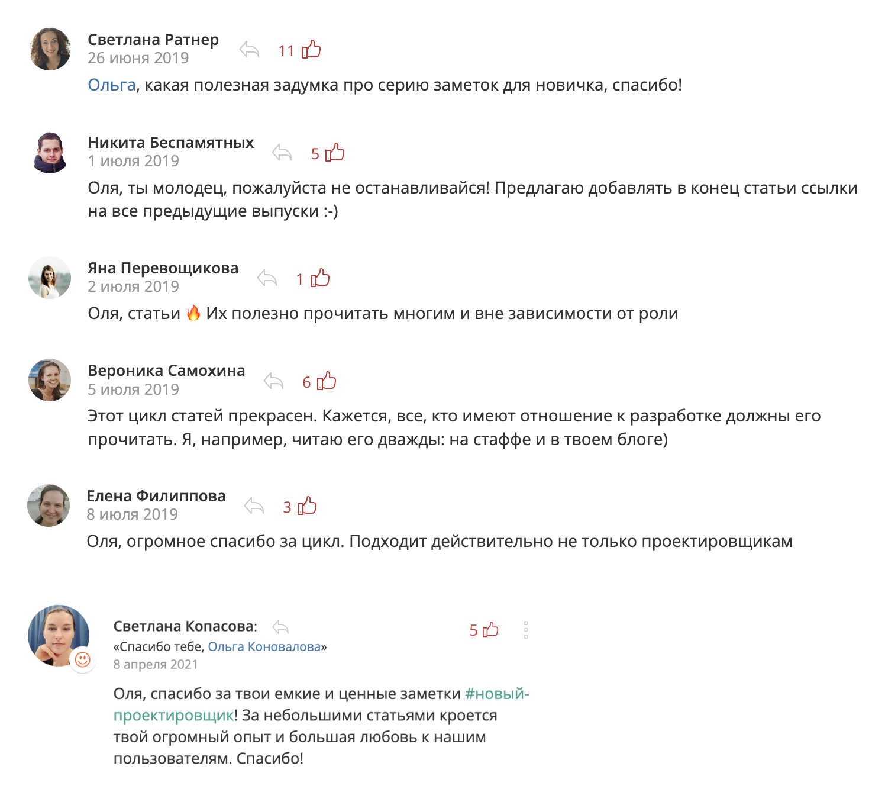

Вступление
Меня зовут Ольга Коновалова. У меня за плечами около 10 лет проектирования интерфейсов, большую их часть я проектировала в компании СКБ Контур. Я была наставником у начинающих дизайнеров интерфейсов в тех продуктовых командах, где работала сама, и какое-то время была лидом у группы дизайнеров из разных продуктовых команд. Мне нравилось передавать свой опыт, помогать дизайнерам на старте.
Однажды я заметила, что рассказываю новеньким дизайнерам одни и те же вещи. А потом был момент, когда я знала, что у меня сейчас спросят — предугадывала вопросы дизайнера наперед 🔮
Я поняла, что не могу держать в себе ответы на эти вопросы, ими нужно поделиться. Так я решила написать серию заметок. Если дизайнер прочитает их в начале своей работы, многие вопросы будут сняты. А еще он проникнется ценностями нашей компании, поймет, что у нас принято, как все устроено, на что мы обращаем внимание — погружение в работу будет проще и быстрее.
Пока писала заметки, оказалось, что они полезны не только дизайнерам, но и другим ролям в разработке. Что-то можно переложить на свою специализацию. А где-то прямо написано, как проектировщик взаимодействует с ребятами из команды, так что им это тоже полезно знать.
Заметки ориентированы на проектировщиков в Контуре и на внутренние процессы Контура. У меня не было цели рассмотреть, как все устроено в других компаниях, наш опыт может отличаться. Что-то вы можете переложить на свои ситуации, и это может оказаться полезным.
Первые десять заметок были написаны в 2019 году. Они были удостоены награды на ежегодном конкурсе среди дизайнеров — Kontur Design Awards 2019. Во внутренней соцсети Контура под этими заметками разворачивались обсуждения. Ребята благодарили за эти заметки. Причем, не только дизайнеры, но и аналитики, тестировщики, юзабилити-специалисты:
Спасибо и вам, ребята. Я рада делиться своим опытом ❤️
О выходе новых заметок я буду сообщать в Телеграм-канале «Будни проектировщицы».